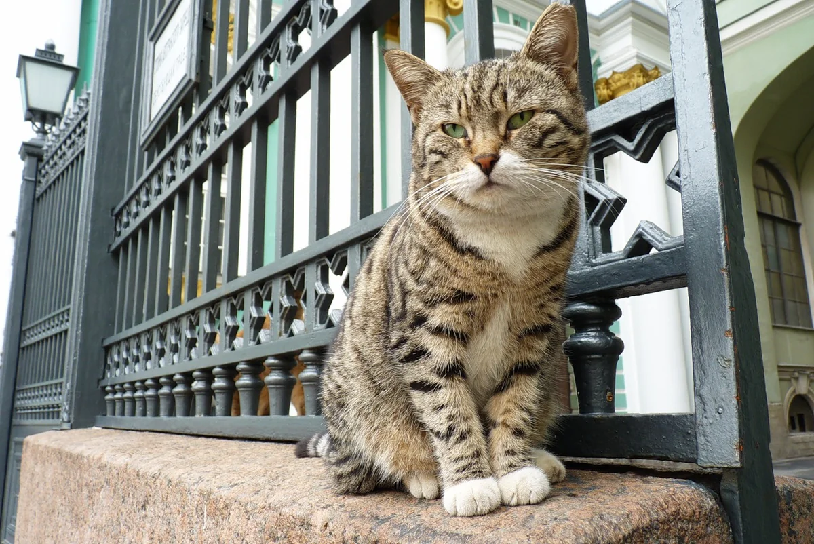
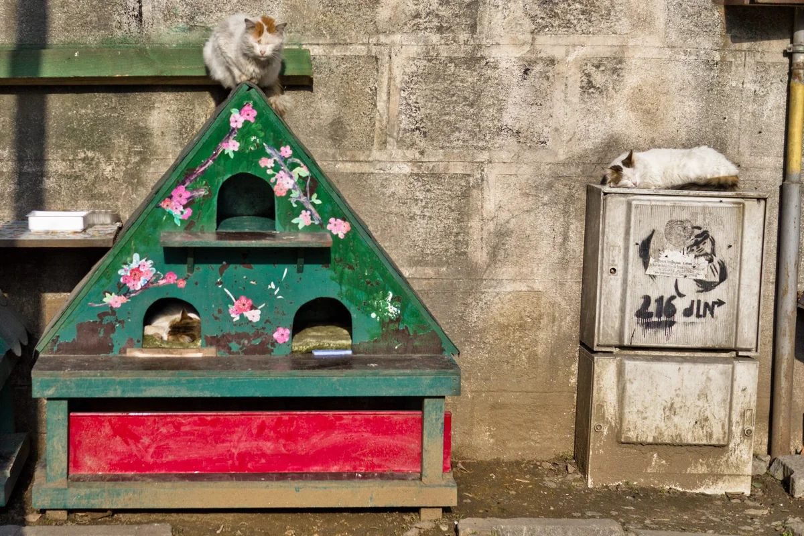
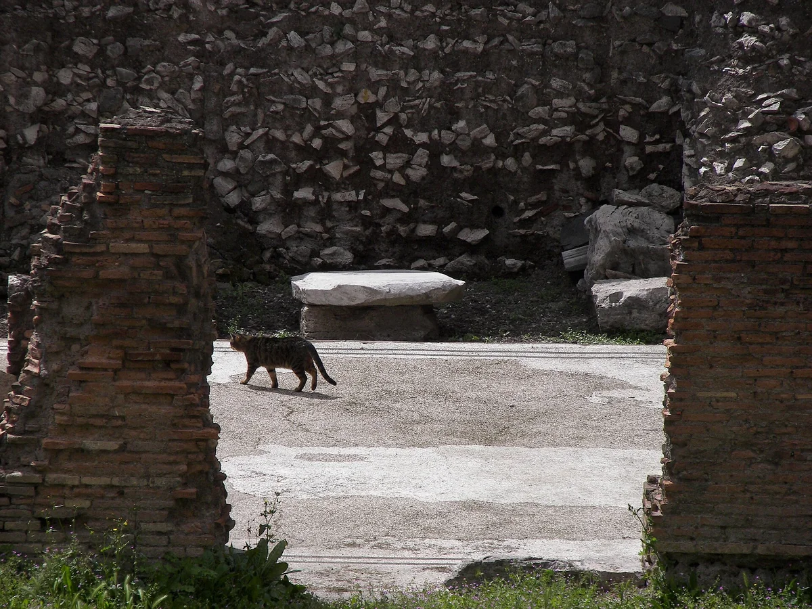
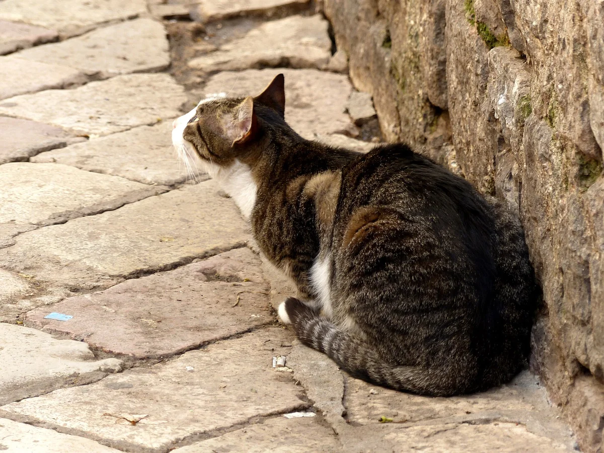
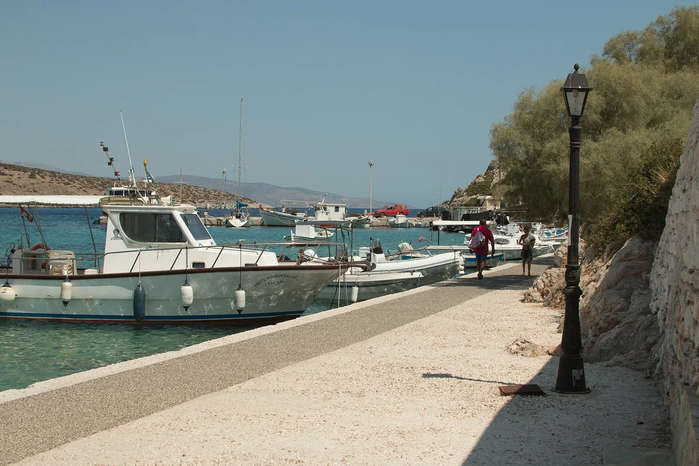
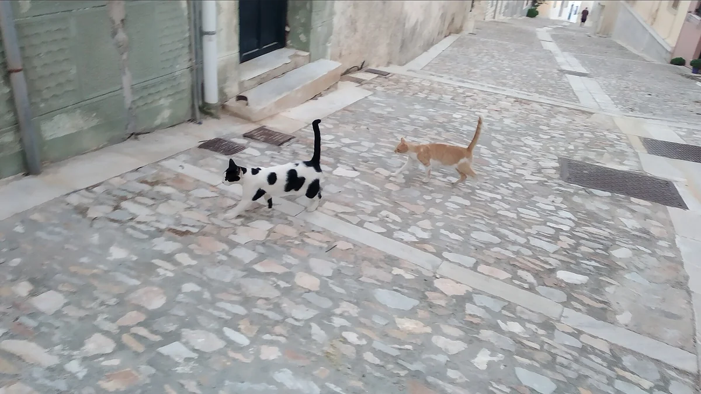
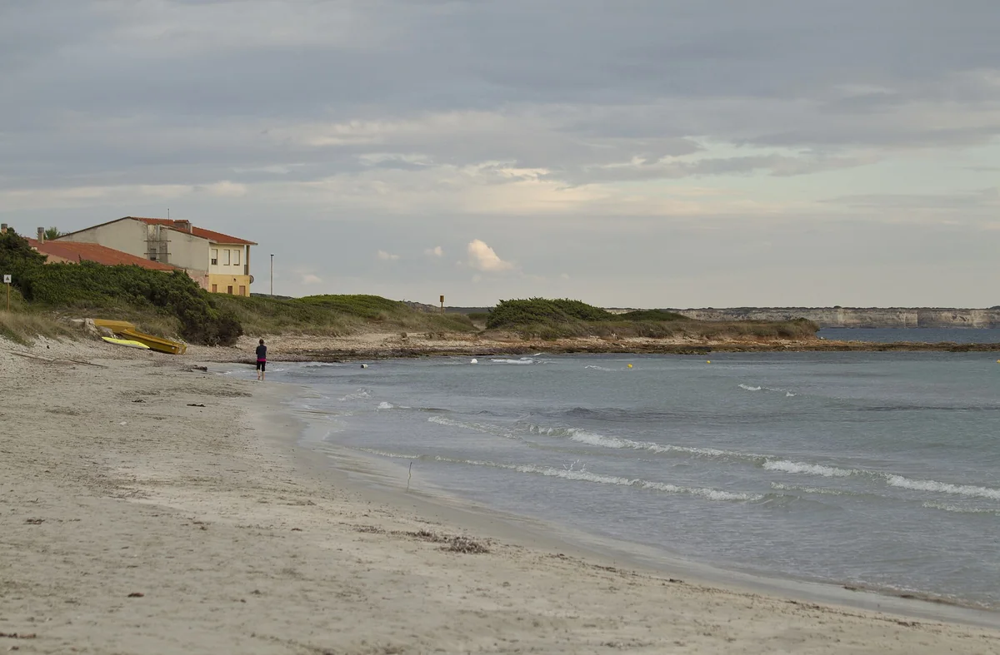
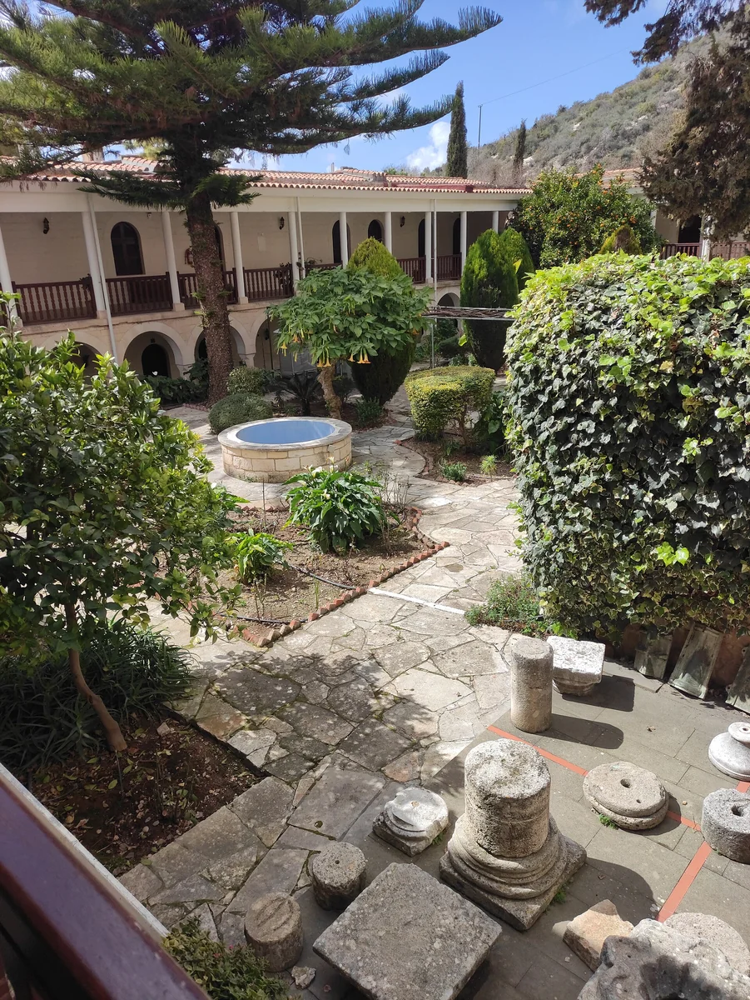
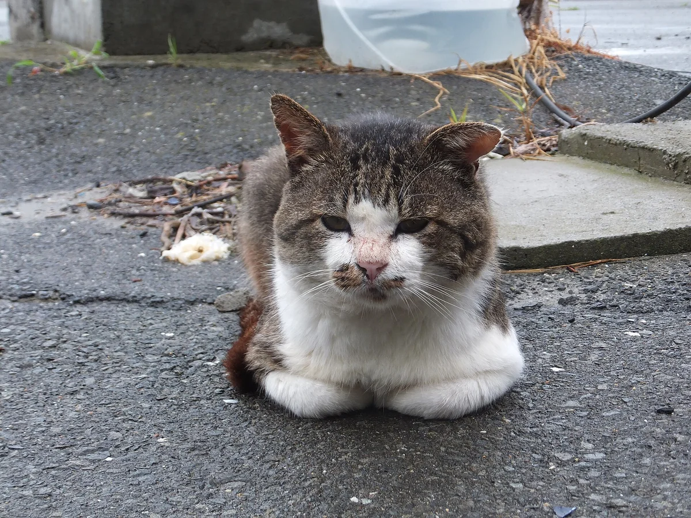
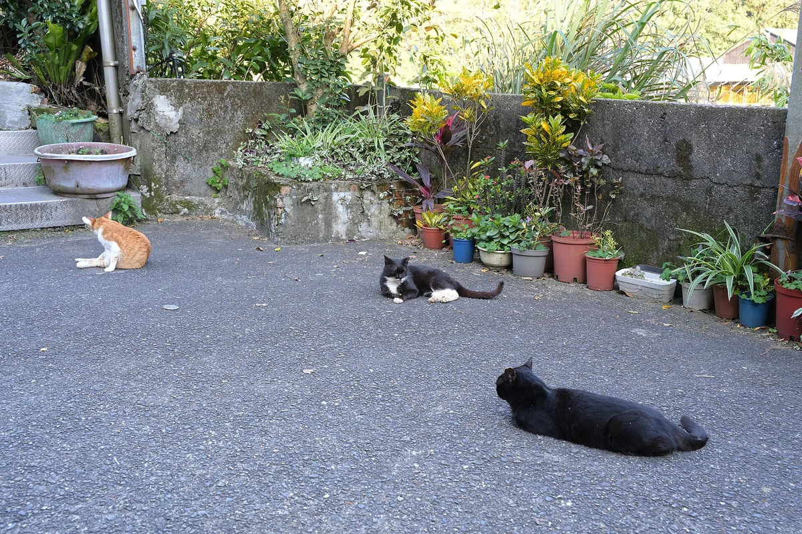

Stories That Matter · Animal welfare
Cities and Islands Where Cats Belong
Ten stories about animals that became part of a place, and the people who care for them.
At the Hermitage gates, on the stone steps of Syros and among Rome's ancient ruins, cats live alongside human history. Sometimes they become part of it. People know their names, put them on postcards and dedicate museums and celebrations to them. Behind that affection are people who fill bowls, notice illness and help an animal find a home. Their daily care gives these places their meaning.
Every figure has a date and a defined scope. City estimates, sanctuary residents and cats supported by a project are different populations. Where no recent census was found, this is stated explicitly.
01 / Russia
Hermitage Cats: Saint Petersburg
A Tradition Older Than the Museum

Museum cats. A figure in 2023 exhibition materials; no verified 2026 census was located.
In 1745, Empress Elizabeth ordered cats to be brought from Kazan to protect palace rooms from rodents. The tradition continued into the life of the Hermitage Museum.
The cats became a museum symbol, with people responsible for their care, veterinary support and their own celebration, the Day of the Hermitage Cat. Alongside great works of art, there is an enduring place for living animals and their needs.
Who cares for the cats: Museum staff and volunteers supporting the Hermitage cats.
Sources and further reading
02 / Türkiye
Istanbul Cats
Neighbours Known Around the World

Street cats across the city. An undated GoTürkiye estimate, checked 24 October 2026; not a census.
In Istanbul, cats are part of everyday neighbourhood life. There is a tangible record of this care: a 1714 engraving depicts a man taking food for cats to the city's market.
Today, residents leave water and food and provide shelters. A cat can have a place in the life of an entire courtyard through the attention of people who see it at their door every day. That relationship has become one of Istanbul's most recognisable images.
Who cares for the cats: Neighbourhood residents, local volunteers and municipal veterinary services.
Sources and further reading
03 / Italy
Torre Argentina Cats in Rome
A Home Among Ancient Temples

Sanctuary cats described in a published visitor account. A secondary-source indication, not a verified 2026 total.
After excavations in 1929, stray cats found shelter among the ruins of Largo di Torre Argentina. Local women, known in Italy as gattare, brought them food. In 1993, Lia Dequel and Silvia Viviani began the work that grew into the well-known sanctuary.
Its story now includes care for sick and older cats, sterilisation and adoption. Among stones that preserve ancient Rome, an everyday story of human commitment continues.
Who cares for the cats: Torre Argentina Cat Sanctuary and its volunteers.
Sources and further reading
04 / Montenegro
Kotor: The City of Cats
A Feline Presence in an Old Port

Old Town cats in a travel feature. No reliable current census was located; Kotor Kitties' sterilisation totals are not a city population count.
Cats on its stone lanes have become an unofficial symbol of Kotor. Local tradition connects their arrival with visiting ships; this is a story passed down, rather than a documented origin. The Cats Museum opened in the Old Town in 2013.
Kotor Kitties began in 2018 as a small effort to sterilise cats. Behind the familiar feline shapes beside the city walls is the shared work of residents, volunteers and veterinarians.
Who cares for the cats: Residents, Kotor Kitties / Kotorske Mačke and local veterinarians.
Sources and further reading
05 / Greece
Cats of Iraklia
Care After the Summer Ends

Sterilised cats supported by Cats of Iraklia, as reported by partner GCWS; checked 24 October 2026. A project figure, not an island census.
On this small Cycladic island, cats live around the port, villages and beaches. For Cats of Iraklia, the defining question was who would feed and treat them after the visitors left. Local nurse Kyriaki-Kia founded the project in 2017.
Behind the beautiful island setting is year-round work: winter feeding, sterilisation and journeys to a veterinarian on neighbouring Naxos. A few committed people can make a lasting difference to animals' lives.
Who cares for the cats: Cats of Iraklia, island volunteers and the Greek Cat Welfare Society.
Sources and further reading
06 / Greece
The Cats of Syros
One Kitten Changes a Home

The site's population in its 2024 year-end review. The project separately fed 70 street cats in Kini, rising to 100 in winter. No island-wide total is established.
In 2010, Joan Bowell and her husband Richard had just settled into their home on Syros when a sick kitten appeared in the garden. Helping that kitten became the beginning of God's Little People Cat Rescue. Joan rescued 30 cats in the first year.
Syros Cats also works on the island, caring for resident animals, feeding street cats and arranging sterilisation. Behind the familiar pictures of cats on island steps are people who have made care part of their daily lives.
Who cares for the cats: Syros Cats, God's Little People Cat Rescue and local caretakers.
Sources and further reading
07 / Italy
Su Pallosu Cats: Sardinia
A Shoreline Story That Continues Through Care

Caretaker's statement of 5 February 2026. All had been abandoned here; this is not the former native colony's population.
Su Pallosu became known through photographs of cats beside the sea. Behind those images are the Atzori family's home and years of care. In early 2026, the caretaker reported that the original locally born colony had come to an end after its last native cat died.
Rescued cats, abandoned here in earlier years, remain in daily care with Andrea Atzori. That care continues for the cats living here today.
Who cares for the cats: Andrea Atzori; the I Gatti di Su Pallosu project history.
Sources and further reading
08 / Cyprus
Tala Cats: Paphos, Cyprus
From Feeding Near a Monastery to a Sanctuary

According to the Tala Cats website, checked 24 October 2026. It uses both 'approximately 500' and '500+'; no census date is given.
Stray cats had long lived near Agios Neophytos Monastery. In 2011, Dawn and Mark Foote began visiting once a week to feed them. Care soon became a daily commitment, and dozens of cats needing treatment were staying in their home.
Donations made fencing possible in 2013. Tala Cats gradually developed into a sanctuary with shelters and separate spaces for vulnerable animals. A large care project grew from a simple commitment to return and help again.
Who cares for the cats: Tala Cats, Dawn and Mark Foote, staff and volunteers.
Sources and further reading
09 / Japan
Tashirojima Cat Island
An Island with a Cat Shrine

Island-wide figure in a Japanese transport bureau report dated 17 March 2026. A rounded description, not a published individual register.
Neko Jinja, a cat shrine, stands near the centre of Tashirojima. Local tradition describes cats as guardians of a good catch, a story preserved by Ishinomaki City as part of island culture.
Island residents feed and look after the cats. A 2026 government visitor project explains that tourists must not add their own feeding, so the residents can maintain managed care. Respect for this place includes listening to the people who live with its animals throughout the year.
Who cares for the cats: Island residents and local partners in care and visitor education.
Sources and further reading
10 / Taiwan
Houtong Cat Village
A New Chapter for a Mining Village

Official statement of 8 April 2024. A new count was announced in February 2026; no verified replacement total was located.
As the coal industry declined, Houtong lost residents. Its cats, photographs shared by enthusiasts and the work of volunteers helped the village gain a new identity. The district's account links the cat village's emergence with improvements to the surroundings and care for the animals.
Houtong now has a Cat Office. In February 2026, Taiwan SPCA resumed operating it with local volunteers and the city's animal protection service. Each day begins with feeding and a roll-call of cats known by name.
Who cares for the cats: Houtong Cat Lovers' Society, Taiwan SPCA and New Taipei's animal protection office.
The Care That Continues After the Photograph
Each story continues through ordinary acts: clean water, a safe place to sleep, sterilisation, vaccination, relief from pain and the search for a home. Respect for animals becomes real through these decisions. For BHOC Veterinary, this is where a story that matters begins: with attention to an individual life and responsibility for its welfare.
How to Support Community Cats
- Read local visiting and feeding guidance. On Tashirojima, residents provide managed feeding and visitors are asked not to add food.
- Support recognised local groups through their official channels, including sterilisation, vaccination and veterinary-care programmes.
- Give cats space to rest and move away, and follow each site’s rules for photography and interaction.
- Contact the local rescue organisation about adoption or volunteering, so help matches the animals’ needs.
Ten Places at a Glance
| Place | Reported figure | Date and scope |
|---|---|---|
| The Hermitage, Saint Petersburg | Around 50 | Museum cats. A figure in 2023 exhibition materials; no verified 2026 census was located. |
| Istanbul | Around 150,000 | Street cats across the city. An undated GoTürkiye estimate, checked 24 October 2026; not a census. |
| Torre Argentina, Rome | Over 150 in a 2024 account | Sanctuary cats described in a published visitor account. A secondary-source indication, not a verified 2026 total. |
| Kotor | Hundreds in a 2023 description | Old Town cats in a travel feature. No reliable current census was located; Kotor Kitties' sterilisation totals are not a city population count. |
| Iraklia | More than 200 supported cats | Sterilised cats supported by Cats of Iraklia, as reported by partner GCWS; checked 24 October 2026. A project figure, not an island census. |
| Syros | 70 Syros Cats residents | The site's population in its 2024 year-end review. The project separately fed 70 street cats in Kini, rising to 100 in winter. No island-wide total is established. |
| Su Pallosu, Sardinia | 17 rescued cats | Caretaker's statement of 5 February 2026. All had been abandoned here; this is not the former native colony's population. |
| Tala, Paphos District | More than 500 in care | According to the Tala Cats website, checked 24 October 2026. It uses both 'approximately 500' and '500+'; no census date is given. |
| Tashirojima | More than 100 | Island-wide figure in a Japanese transport bureau report dated 17 March 2026. A rounded description, not a published individual register. |
| Houtong, New Taipei | 172 street cats in 2024 | Official statement of 8 April 2024. A new count was announced in February 2026; no verified replacement total was located. |
The photographs document different years. Iraklia is shown through Agios Georgios harbour, and Tala through its neighbouring monastery. The Sardinian setting photograph shows nearby Putzu Idu on the wider San Vero Milis coast, rather than Su Pallosu or its cats. Each photograph retains its credited Creative Commons licence.